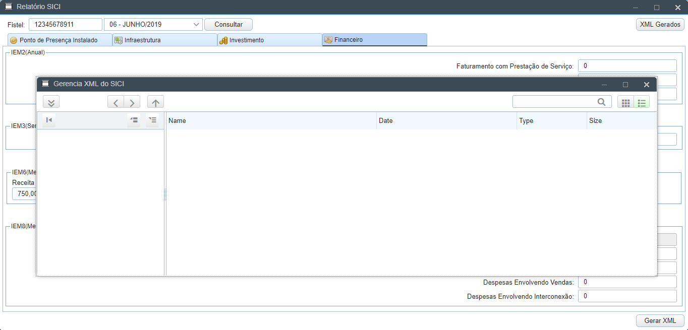

Bem Vindo ao MyCore WIKI!
Módulo SICI > Financeiro
Nesta tela são visualizadas as informações de financiamentos tomados pelo provedor, durante um determinado período.

Nesta tela são visualizadas as informações de financiamentos tomados pelo provedor, durante um determinado período.